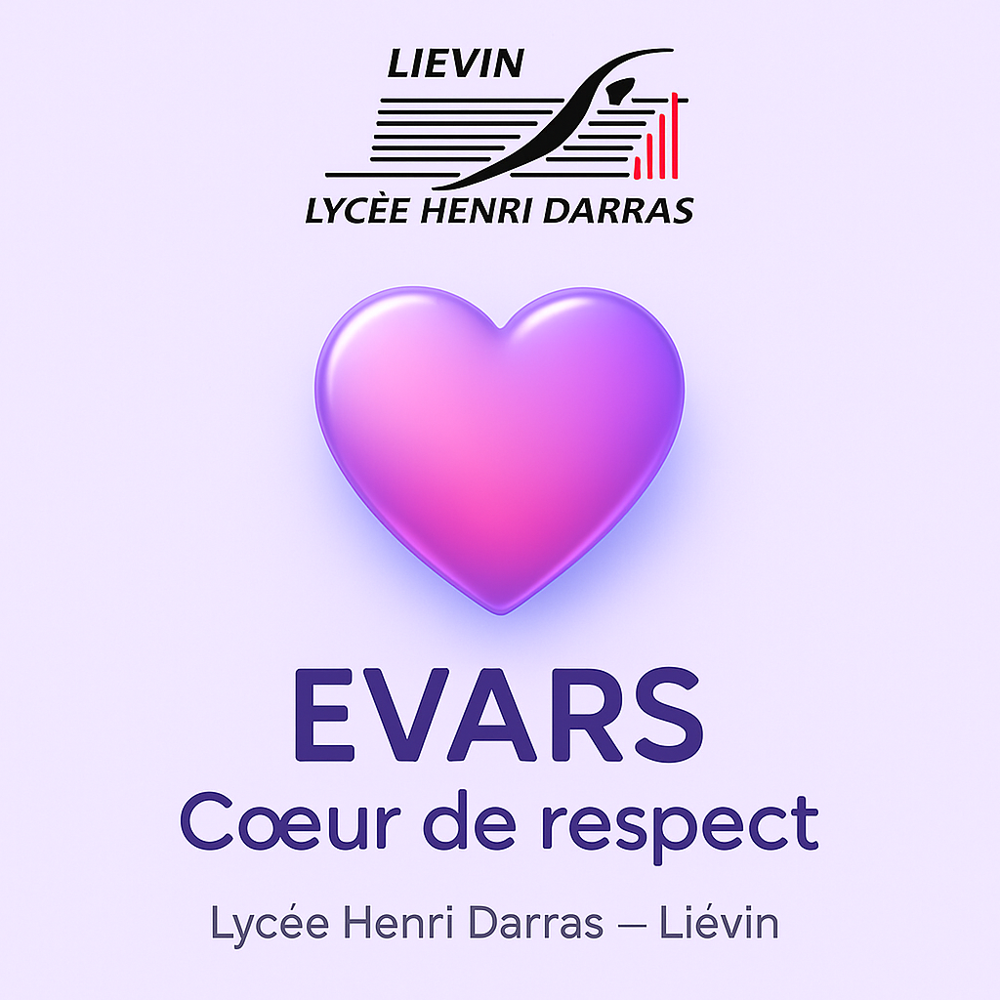

EVARS —
Cœur de respect
1CIEL
0.00%
Indicateur
— +6,67%/bon choix (15/15 = 100%)
Revenir
ou
Recommencer
si besoin.
Choisis un personnage
Objectif : atteindre 100% en enchaînant 15 bons choix.
Progression : 0%
💞 Revenir
💗 Recommencer
Pourquoi ce choix pose problème ?
…
Continuer